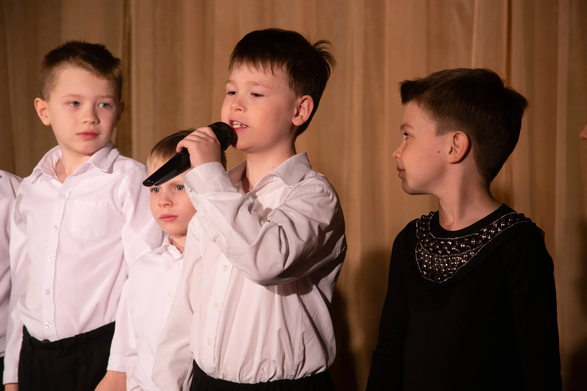

Ребёнок стесняется и боится сцены: что делать родителю
Многие дети боятся выступать. Кто-то прячется за маму, кто-то замолкает при чужих, кто-то отказывается выходить к доске. Родители переживают: «Это пройдёт?», «Может, ребёнок не создан для сцены?».
На самом деле страх сцены — это не приговор. Это навык, который можно развивать мягко, без давления. И начинается всё не с «выступи», а с чувства безопасности.
Почему ребёнок стесняется
Стеснение — это не слабость. Это защитная реакция. Ребёнок боится оценки, боится ошибиться, боится быть не таким. Особенно сильно это проявляется в 5–7 лет, когда появляется первое осознание «меня видят».
5 мягких шагов, которые помогают
1. Не заставляйте. Фразы «ну давай, расскажи стишок» только усиливают зажим.
2. Создайте маленькие победы. Пусть ребёнок сначала расскажет стих игрушке, потом бабушке, потом ещё кому-то.
3. Играйте в сцену. В театральной игре ребёнок забывает, что его «оценивают», — и раскрывается.
4. Хвалите не за результат, а за смелость. Не «как красиво», а «как здорово, что ты попробовал».
5. Дайте время. Свобода появляется не за одно занятие, а когда ребёнок чувствует, что его не сломают.

Когда стоит прийти в театральную студию
Если ребёнок стесняется, театральная среда может стать для него мягким тренажёром. В ШКИТ мы не требуем «выступать». Мы играем, общаемся, пробуем — и страх уходит сам.